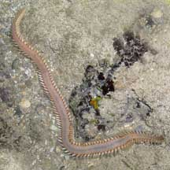
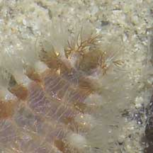
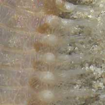
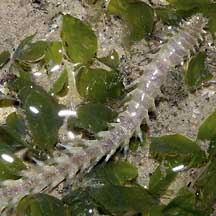
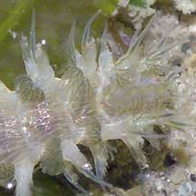
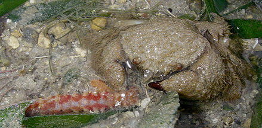
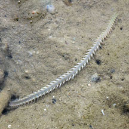
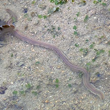

|
|
| worms text index | photo index |
|
worms > Phylum Annelida >
Class Polychaeta
|
| Reef
bristleworms Eurythoe complanata* Family Amphinomidae updated Oct 2019 Where seen? This large active bristleworm is often encountered on many of our shores. On coral rubble near living reefs and seagrasses. It is especially active at night, foraging busily among the rubble. During the day, the worms are often hidden under stones. What is a bristleworm? It is a segmented worm belonging to the Class Polychaeta, Phylum Annelida. The polychaetes include bristleworms, and Phylum Annelida includes the more familiar earthworm. Many members of the Family Amphinomidae are known as fireworms because of the burning pain they produce when handled. Features: About 10-20cm long. Body flat, broad, tapered at both ends. Along the body are two rows of 'bunches' of bristles; long transparent bristles on the upperside, and a row of shorter bristles along the underside. For each pair of bristle 'bunch' there is a short tuft. Colours greenish or pinkish, sometimes the tufts are red. According to Leslie Harris, these worms belong to Family Amphinomidae, and appear to be Eurythoe complanata. There is some debate over whether this is one widespread species or a complex of species that look similar.
What do they eat? They feed on coral polyps, sponges, anemones, hydroids and ascidians. They lack jaws but suck out the juices of their prey. |
 Sentosa, Jul 05 |
 Front of the worm. |
 Rows of bristle 'bunches' with tufts. |
 Labrador, Mar 05 |
 |
| What eats them? Despite their fearsome bristles, crabs have been seen chomping happily on them. |
 Swimming crab eating a Reef bristleworm Pulau Semakau (West), Jul 25 Photo shared by Jayden Kang on facebok. |
 Common hairy crab eating a Reef bristleworm. Cyrene Reef, Oct 08 Photo shared by Toh Chay Hoon on flickr. |
|
*Tentative identification. Species are difficult to positively identify without close examination.
On this website, they are grouped by external features for convenience of display.
| Reef bristleworms on Singapore shores |
On wildsingapore
flickr
|
| Other sightings on Singapore shores |
 Sentosa Tg Rimau, Jan 26 Photo shared by Rui Quan Oh on facebook. |
 Terumbu Bemban, Aug 25 Photo shared by Adriane Lee on facebook. |
|
Acknowledgement Links
References
|